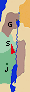
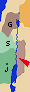
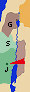

|
|
 Sección 8: A la Fiesta de los Tabernáculos, en Jerusalén
(Sep 29 - Oct 29)
Sección 8: A la Fiesta de los Tabernáculos, en Jerusalén
(Sep 29 - Oct 29)
Jesús abandona Galilea.
Emprende el viaje en secreto rumbo a Jerusalén para asistir a
la Fiesta de los Tabernáculos. Ante la
inhospitalidad de los samaritanos, debe desviarse
por Perea, al este del Jordán.
(Sept 29).
Durante este viaje, Jesús advierte las
condiciones para seguirlo,
envía a los 72 discípulos y
maldice a las ciudades impenitentes.
En ocasión del
retorno gozoso de los discípulos,
Jesús bendice al Padre por haber
llamado a los pequeños,
invita a tomar su yugo
("mi yugo es liviano...") y proclama
dichosos a los que lo ven.
Llegando a Judea, relata la
parábola del buen samaritano.
Es recibido
en Betania, en casa de Marta y María, donde
declara que "María eligió la mejor parte". |
|
| # | Viaje hacia la fiesta de los tabernáculos en Jerusalén | |||
 # # | Incredulidad de los parientes. Jesús decide viajar en secreto | |||
 7:2 7:2 Pero se acercaba la fiesta judía de las Tiendas. Pero se acercaba la fiesta judía de las Tiendas.7:3 Y le dijeron sus hermanos: «Sal de aquí y vete a Judea, para que también tus discípulos vean las obras que haces, 7:4 pues nadie actúa en secreto cuando quiere ser conocido. Si haces estas cosas, muéstrate al mundo.» 7:5 Es que ni siquiera sus hermanos creían en él. 7:6 Entonces les dice Jesús: «Todavía no ha llegado mi tiempo, en cambio vuestro tiempo siempre está a mano. 7:7 El mundo no puede odiaros; a mí sí me aborrece, porque doy testimonio de que sus obras son perversas. 7:8 Subid vosotros a la fiesta; yo no subo a esta fiesta porque aún no se ha cumplido mi tiempo.» 7:9 Dicho esto, se quedó en Galilea.7:10 Pero después que sus hermanos subieron a la fiesta, entonces él también subió no manifiestamente, sino de incógnito. 7:11 Los judíos, durante la fiesta, andaban buscándole y decían: «¿Dónde está ése?» 7:12 Entre la gente había muchos comentarios acerca de él. Unos decían: «Es bueno.» Otros decían: «No, sino que engaña al pueblo.» 7:13 Pero nadie hablaba de él abiertamente por miedo a los judíos.  |
||||
| # | Inhospitalidad de los samaritanos | |||
|  | 9:51 Sucedió que como se iban cumpliendo los días de su asunción, él se afirmó en su voluntad de ir a Jerusalén, 9:52 y envió mensajeros delante de sí, que fueron y entraron en un pueblo de samaritanos para prepararle posada; 9:53 pero no le recibieron porque tenía intención de ir a Jerusalén. 9:54 Al verlo sus discípulos Santiago y Juan, dijeron: «Señor, ¿quieres que digamos que baje fuego del cielo y los consuma?» 9:55 Pero volviéndose, les reprendió; 9:56 y se fueron a otro pueblo. |
|||
| # | Condiciones para seguir a Jesús | |||
|  | 8:19 Y un escriba se acercó y le dijo: «Maestro, te seguiré adondequiera que vayas.» 8:20 Dícele Jesús: «Las zorras tienen guaridas, y las aves del cielo nidos; pero el Hijo del hombre no tiene donde reclinar la cabeza.» 8:21 Otro de los discípulos le dijo: «Señor, déjame ir primero a enterrar a mi padre.» 8:22 Dícele Jesús: «Sígueme, y deja que los muertos entierren a sus muertos.» |
9:57 Mientras iban caminando, uno le dijo: «Te seguiré adondequiera que vayas.» 9:58 Jesús le dijo: «Las zorras tienen guaridas, y las aves del cielo nidos; pero el Hijo del hombre no tiene donde reclinar la cabeza.» 9:59 A otro dijo: «Sígueme.» El respondió: «Déjame ir primero a enterrar a mi padre.» 9:60 Le respondió: «Deja que los muertos entierren a sus muertos; tú vete a anunciar el Reino de Dios.» 9:61 También otro le dijo: «Te seguiré, Señor; pero déjame antes despedirme de los de mi casa.» 9:62 Le dijo Jesús: «Nadie que pone la mano en el arado y mira hacia atrás es apto para el Reino de Dios.» |
||
| # | Envío de los 72 discípulos | |||
| 10:1 Después de esto, designó el Señor a otros 72, y los envió de dos en dos delante de sí, a todas las ciudades y sitios a donde él había de ir. 10:2 Y les dijo: «La mies es mucha, y los obreros pocos. Rogad, pues, al Dueño de la mies que envíe obreros a su mies. 10:3 Id; mirad que os envío como corderos en medio de lobos.10:4 No llevéis bolsa, ni alforja, ni sandalias. Y no saludéis a nadie en el camino. 10:5 En la casa en que entréis, decid primero: "Paz a esta casa."10:6 Y si hubiere allí un hijo de paz, vuestra paz reposará sobre él; si no, se volverá a vosotros. 10:7 Permaneced en la misma casa, comiendo y bebiendo lo que tengan, porque el obrero merece su salario. No vayáis de casa en casa. 10:8 En la ciudad en que entréis y os reciban, comed lo que os pongan; 10:9 curad los enfermos que haya en ella, y decidles: "El Reino de Dios está cerca de vosotros." 10:10 En la ciudad en que entréis y no os reciban, salid a sus plazas y decid: 10:11 "Hasta el polvo de vuestra ciudad que se nos ha pegado a los pies, os lo sacudimos. Pero sabed, con todo, que el Reino de Dios está cerca." 10:12 Os digo que en aquel Día habrá menos rigor para Sodoma que para aquella ciudad. |
||||
| # | Maldición de las ciudades impenitentes | |||
| 11:20 Entonces se puso a maldecir a las ciudades en las que se habían realizado la mayoría de sus milagros, porque no se habían convertido: 11:21 «¡Ay de ti, Corazín! ¡Ay de ti, Betsaida! Porque si en Tiro y en Sidón se hubieran hecho los milagros que se han hecho en vosotras, tiempo ha que en sayal y ceniza se habrían convertido. 11:22 Por eso os digo que el día del Juicio habrá menos rigor para Tiro y Sidón que para vosotras. 11:23 Y tú, Cafarnaúm, ¿hasta el cielo te vas a encumbrar? ¡Hasta el Hades te hundirás! Porque si en Sodoma se hubieran hecho los milagros que se han hecho en ti, aún subsistiría el día de hoy. 11:24 Por eso os digo que el día del Juicio habrá menos rigor para la tierra de Sodoma que para ti.» |
10:13 «¡Ay de ti, Corazín! ¡Ay de ti, Betsaida! Porque si en Tiro y en Sidón se hubieran hecho los milagros que se han hecho en vosotras, tiempo ha que, sentados con sayal y ceniza, se habrían convertido. 10:14 Por eso, en el Juicio habrá menos rigor para Tiro y Sidón que para vosotras. 10:15 Y tú, Cafarnaúm, ¿hasta el cielo te vas a encumbrar? ¡Hasta el Hades te hundirás! 10:16 «Quien a vosotros os escucha, a mí me escucha; y quien a vosotros os rechaza, a mí me rechaza; y quien me rechaza a mí, rechaza al que me ha enviado.» |
|||
| # | Retorno de los discípulos | |||
| 10:17 Regresaron los 72 alegres, diciendo: «Señor, hasta los demonios se nos someten en tu nombre.» 10:18 El les dijo: «Yo veía a Satanás caer del cielo como un rayo. 10:19 Mirad, os he dado el poder de pisar sobre serpientes y escorpiones, y sobre todo poder del enemigo, y nada os podrá hacer daño; 10:20 pero no os alegréis de que los espíritus se os sometan; alegraos de que vuestros nombres estén escritos en los cielos.» |
||||
| # | El llamado a los pequeños | |||
| 11:25 En aquel tiempo, tomando Jesús la palabra, dijo: «Yo te bendigo, Padre, Señor del cielo y de la tierra, porque has ocultado estas cosas a sabios e inteligentes, y se las has revelado a pequeños. 11:26 Sí, Padre, pues tal ha sido tu beneplácito. 11:27 Todo me ha sido entregado por mi Padre, y nadie conoce bien al Hijo sino el Padre, ni al Padre le conoce bien nadie sino el Hijo, y aquel a quien el Hijo se lo quiera revelar. |
10:21 En aquel momento, se llenó de gozo Jesús en el Espíritu Santo, y dijo: «Yo te bendigo, Padre, Señor del cielo y de la tierra, porque has ocultado estas cosas a sabios e inteligentes, y se las has revelado a pequeños. Sí, Padre, pues tal ha sido tu beneplácito. 10:22 Todo me ha sido entregado por mi Padre, y nadie conoce quién es el Hijo sino el Padre; y quién es el Padre sino el Hijo, y aquel a quien el Hijo se lo quiera revelar.» |
|||
| # | "Mi yugo es liviano..." | |||
| 11:28 «Venid a mí todos los que estáis fatigados y sobrecargados, y yo os daré descanso. 11:29 Tomad sobre vosotros mi yugo, y aprended de mí, que soy manso y humilde de corazón; y hallaréis descanso para vuestras almas. 11:30 Porque mi yugo es suave y mi carga ligera.» |
||||
| # | "Dichosos los que me ven" | |||
| 13:16 «¡Pero dichosos vuestros ojos, porque ven, y vuestros oídos, porque oyen! 13:17 Pues os aseguro que muchos profetas y justos desearon ver lo que vosotros veis, pero no lo vieron, y oír lo que vosotros oís, pero no lo oyeron. |
10:23 Volviéndose a los discípulos, les dijo aparte: «¡Dichosos los ojos que ven lo que veis! 10:24 Porque os digo que muchos profetas y reyes quisieron ver lo que vosotros veis, pero no lo vieron, y oír lo que vosotros oís, pero no lo oyeron.» |
|||
| # | El buen samaritano | |||
| 10:25 Se levantó un legista, y dijo para ponerle a prueba: «Maestro, ¿que he de hacer para tener en herencia vida eterna?» 10:26 El le dijo: «¿Qué está escrito en la Ley? ¿Cómo lees?» 10:27 Respondió: «Amarás al Señor tu Dios con todo tu corazón, con toda tu alma, con todas tus fuerzas y con toda tu mente; y a tu prójimo como a ti mismo.» 10:28 Díjole entonces: «Bien has respondido. Haz eso y vivirás.» 10:29 Pero él, queriendo justificarse, dijo a Jesús: «Y ¿quién es mi prójimo?»10:30 Jesús respondió: «Bajaba un hombre de Jerusalén a Jericó, y cayó en manos de salteadores, que, después de despojarle y golpearle, se fueron dejándole medio muerto. 10:31 Casualmente, bajaba por aquel camino un sacerdote y, al verle, dio un rodeo. 10:32 De igual modo, un levita que pasaba por aquel sitio le vio y dio un rodeo. 10:33 Pero un samaritano que iba de camino llegó junto a él, y al verle tuvo compasión; 10:34 y, acercándose, vendó sus heridas, echando en ellas aceite y vino; y montándole sobre su propia cabalgadura, le llevó a una posada y cuidó de él. 10:35 Al día siguiente, sacando dos denarios, se los dio al posadero y dijo: "Cuida de él y, si gastas algo más, te lo pagaré cuando vuelva." 10:36 ¿Quién de estos tres te parece que fue prójimo del que cayó en manos de los salteadores?» 10:37 El dijo: «El que practicó la misericordia con él.» Díjole Jesús: «Vete y haz tú lo mismo.» |
||||
| # | En Betania, en casa de Marta y María | |||
|  | 10:38 Yendo ellos de camino, entró en un pueblo; y una mujer, llamada Marta, le recibió en su casa. 10:39 Tenía ella una hermana llamada María, que, sentada a los pies del Señor, escuchaba su Palabra, 10:40 mientras Marta estaba atareada en muchos quehaceres. Acercándose, pues, dijo: «Señor, ¿no te importa que mi hermana me deje sola en el trabajo? Dile, pues, que me ayude.» 10:41 Le respondió el Señor: «Marta, Marta, te preocupas y te agitas por muchas cosas; 10:42 y hay necesidad de pocas, o mejor, de una sola. María ha elegido la parte buena, que no le será quitada.» |
|||
| # | En Jerusalén: Fiesta de los tabernáculos | |||
| # | "Rompes la ley del Sábado" | |||
| 7:14 Mediada ya la fiesta, subió Jesús al Templo y se puso a enseñar. 7:15 Los judíos, asombrados, decían: «¿Cómo entiende de letras sin haber estudiado?» 7:16 Jesús les respondió: «Mi doctrina no es mía, sino del que me ha enviado. 7:17 Si alguno quiere cumplir su voluntad, verá si mi doctrina es de Dios o hablo yo por mi cuenta. 7:18 El que habla por su cuenta, busca su propia gloria; pero el que busca la gloria del que le ha enviado, ese es veraz; y no hay impostura en él. 7:19 ¿No es Moisés el que os dio la Ley? Y ninguno de vosotros cumple la Ley. ¿Por qué queréis matarme?»7:20 Respondió la gente: «Tienes un demonio. ¿Quién quiere matarte?» 7:21 Jesús les respondió: «Una sola obra he hecho y todos os maravilláis. 7:22 Moisés os dio la circuncisión (no que provenga de Moisés, sino de los patriarcas) y vosotros circuncidáis a uno en sábado. 7:23 Si se circuncida a un hombre en sábado, para no quebrantar la Ley de Moisés, ¿os irritáis contra mí porque he curado a un hombre entero en sábado? 7:24 No juzguéis según la apariencia. Juzgad con juicio justo.» |
||||
| # | Jesús enviado del Padre | |||
| 7:25 Decían algunos de los de Jerusalén: «¿No es a ése a quien quieren matar? 7:26 Mirad cómo habla con toda libertad y no le dicen nada. ¿Habrán reconocido de veras las autoridades que este es el Cristo? 7:27 Pero éste sabemos de dónde es, mientras que, cuando venga el Cristo, nadie sabrá de dónde es.» 7:28 Gritó, pues, Jesús, enseñando en el Templo y diciendo: «Me conocéis a mí y sabéis de dónde soy. Pero yo no he venido por mi cuenta; sino que verdaderamente me envía el que me envía; pero vosotros no le conocéis. 7:29 Yo le conozco, porque vengo de él y él es el que me ha enviado.» 7:30 Querían, pues, detenerle, pero nadie le echó mano, porque todavía no había llegado su hora. |
||||
| # | Preanuncio de la futura glorificación | |||
| 7:31 Y muchos entre la gente creyeron en él y decían: «Cuando venga el Cristo, ¿hará más señales que las que ha hecho éste?» 7:32 Se enteraron los fariseos que la gente hacía estos comentarios acerca de él y enviaron guardias para detenerle. 7:33 Entonces él dijo: «Todavía un poco de tiempo estaré con vosotros, y me voy al que me ha enviado. 7:34 Me buscaréis y no me encontraréis; y adonde yo esté, vosotros no podéis venir.» 7:35 Se decían entre sí los judíos: «¿A dónde se irá éste que nosotros no le podamos encontrar? ¿Se irá a los que viven dispersos entre los griegos para enseñar a los griegos? 7:36 ¿Qué es eso que ha dicho: "Me buscaréis y no me encontraréis", y "adonde yo esté, vosotros no podéis venir"?» |
||||
| # | "Si alguno tiene sed, venga a mí y beba" | |||
| 7:37 El último día de la fiesta, el más solemne, Jesús puesto en pie, gritó: «Si alguno tiene sed, venga a mí, y beba 7:38 el que crea en mí», como dice la Escritura: De su seno correrán ríos de agua viva. 7:39 Esto lo decía refiriéndose al Espíritu que iban a recibir los que creyeran en él. Porque aún no había Espíritu, pues todavía Jesús no había sido glorificado. |
||||
| # | Juicio del pueblo sobre Jesús | |||
| 7:40 Muchos entre la gente, que le habían oído estas palabras, decían: «Este es verdaderamente el profeta.» 7:41 Otros decían: «Este es el Cristo.» Pero otros replicaban: «¿Acaso va a venir de Galilea el Cristo? 7:42 ¿No dice la Escritura que el Cristo vendrá de la descendencia de David y de Belén, el pueblo de donde era David?» 7:43 Se originó, pues, una disensión entre la gente por causa de él. 7:44 Algunos de ellos querían detenerle, pero nadie le echó mano. 7:45 Los guardias volvieron donde los sumos sacerdotes y los fariseos. Estos les dijeron: «¿Por qué no le habéis traído?» 7:46 Respondieron los guardias: «Jamás un hombre ha hablado como habla ese hombre.» 7:47 Los fariseos les respondieron: «¿Vosotros también os habéis dejado embaucar? 7:48 ¿Acaso ha creído en él algún magistrado o algún fariseo? 7:49 Pero esa gente que no conoce la Ley son unos malditos.» 7:50 Les dice Nicodemo, que era uno de ellos, el que había ido anteriormente donde Jesús: 7:51 «¿Acaso nuestra Ley juzga a un hombre sin haberle antes oído y sin saber lo que hace?» 7:52 Ellos le respondieron: «¿También tú eres de Galilea? Indaga y verás que de Galilea no sale ningún profeta.» 7:53 Y se volvieron cada uno a su casa. |
||||
| # | Jesús y la adúltera "El que esté libre de pecado, que tire la primera piedra" | |||
| 8:1 Mas Jesús se fue al monte de los Olivos. 8:2 Pero de madrugada se presentó otra vez en el Templo, y todo el pueblo acudía a él. Entonces se sentó y se puso a enseñarles. 8:3 Los escribas y fariseos le llevan una mujer sorprendida en adulterio, la ponen en medio 8:4 y le dicen: «Maestro, esta mujer ha sido sorprendida en flagrante adulterio. 8:5 Moisés nos mandó en la Ley apedrear a estas mujeres. ¿Tú qué dices?» 8:6 Esto lo decían para tentarle, para tener de qué acuasarle. Pero Jesús, inclinándose, se puso a escribir con el dedo en la tierra. 8:7 Pero, como ellos insistían en preguntarle, se incorporó y les dijo: «Aquel de vosotros que esté sin pecado, que le arroje la primera piedra.» 8:8 E inclinándose de nuevo, escribía en la tierra. 8:9 Ellos, al oír estas palabras, se iban retirando uno tras otro, comenzando por los más viejos; y se quedó solo Jesús con la mujer, que seguía en medio. 8:10 Incorporándose Jesús le dijo: «Mujer, ¿dónde están? ¿Nadie te ha condenado?» 8:11 Ella respondió: «Nadie, Señor.» Jesús le dijo: «Tampoco yo te condeno. Vete, y en adelante no peques más.» |
||||
| # | Más disputas con los fariseos en Jerusalén | |||
| # | Jesús, luz del mundo | |||
| 8:12 Jesús les habló otra vez diciendo: «Yo soy la luz del mundo; el que me siga no caminará en la oscuridad, sino que tendrá la luz de la vida.» 8:13 Los fariseos le dijeron: «Tú das testimonio de ti mismo: tu testimonio no vale.»8:14 Jesús les respondió: «Aunque yo dé testimonio de mí mismo, mi testimonio vale, porque sé de dónde he venido y a dónde voy; pero vosotros no sabéis de dónde vengo ni a dónde voy. 8:15 Vosotros juzgáis según la carne; yo no juzgo a nadie; 8:16 y si juzgo, mi juicio es verdadero, porque no estoy yo solo, sino yo y el que me ha enviado. 8:17 Y en vuestra Ley está escrito que el testimonio de dos personas es válido. 8:18 Yo soy el que doy testimonio de mí mismo y también el que me ha enviado, el Padre, da testimonio de mí.» 8:19 Entonces le decían: «¿Dónde está tu Padre?» Respondió Jesús: «No me conocéis ni a mí ni a mi Padre; si me conocierais a mí, conoceríais también a mi Padre.»8:20 Estas palabras las pronunció en el Tesoro, mientras enseñaba en el Templo. Y nadie le prendió, porque aún no había llegado su hora. |
||||
| # | Castigo de los incrédulos | |||
| 8:21 Jesús les dijo otra vez: «Yo me voy y vosotros me buscaréis, y moriréis en vuestro pecado. Adonde yo voy, vosotros no podéis ir.» 8:22 Los judíos se decían: «¿Es que se va a suicidar, pues dice: "Adonde yo voy, vosotros no podéis ir?» 8:23 El les decía: «Vosotros sois de abajo, yo soy de arriba. Vosotros sois de este mundo, yo no soy de este mundo. 8:24 Ya os he dicho que moriréis en vuestros pecados, porque si no creéis que Yo Soy, moriréis en vuestros pecados.» 8:25 Entonces le decían: «¿Quién eres tú?» Jesús les respondió: «Desde el principio, lo que os estoy diciendo. 8:26 Mucho podría hablar de vosotros y juzgar pero el que me ha enviado es veraz, y lo que le he oído a él es lo que hablo al mundo.» 8:27 No comprendieron que les hablaba del Padre. 8:28 Les dijo, pues, Jesús: «Cuando hayáis levantado al Hijo del hombre, entonces sabréis que Yo Soy, y que no hago nada por mi propia cuenta; sino que, lo que el Padre me ha enseñado, eso es lo que hablo. 8:29 Y el que me ha enviado está conmigo: no me ha dejado solo, porque yo hago siempre lo que le agrada a él.» 8:30 Al hablar así, muchos creyeron en él. |
||||
| # | ¿Quiénes son los hijos de Abraham? | |||
| 8:31 Decía, pues, Jesús a los judíos que habían creído en él: «Si os mantenéis en mi Palabra, seréis verdaderamente mis discípulos, 8:32 y conoceréis la verdad y la verdad os hará libres.» 8:33 Ellos le respondieron: «Nosotros somos descendencia de Abraham y nunca hemos sido esclavos de nadie. ¿Cómo dices tú: Os haréis libres?» 8:34 Jesús les respondió: «En verdad, en verdad os digo: todo el que comete pecado es un esclavo. 8:35 Y el esclavo no se queda en casa para siempre; mientras el hijo se queda para siempre. 8:36 Si, pues, el Hijo os da la libertad, seréis realmente libres. 8:37 Ya sé que sois descendencia de Abraham; pero tratáis de matarme, porque mi Palabra no prende en vosotros. 8:38 Yo hablo lo que he visto donde mi Padre; y vosotros hacéis lo que habéis oído donde vuestro padre.» 8:39 Ellos le respondieron: «Nuestro padre es Abraham.» Jesús les dice: «Si sois hijos de Abraham, haced las obras de Abraham. 8:40 Pero tratáis de matarme, a mí que os he dicho la verdad que oí de Dios. Eso no lo hizo Abraham. 8:41 Vosotros hacéis las obras de vuestro padre.» Ellos le dijeron: «Nosotros no hemos nacido de la prostitución; no tenemos más padre que a Dios.»8:42 Jesús les respondió: «Si Dios fuera vuestro Padre, me amaríais a mí, porque yo he salido y vengo de Dios; no he venido por mi cuenta, sino que él me ha enviado. 8:43 ¿Por qué no reconocéis mi lenguaje? Porque no podéis escuchar mi Palabra. 8:44 Vosotros sois de vuestro padre el diablo y queréis cumplir los deseos de vuestro padre. Este era homicida desde el principio, y no se mantuvo en la verdad, porque no hay verdad en él; cuando dice la mentira, dice lo que le sale de dentro, porque es mentiroso y padre de la mentira. 8:45 Pero a mí, como os digo la verdad, no me creéis. 8:46 ¿Quién de vosotros puede probar que soy pecador? Si digo la verdad, ¿por qué no me creéis? 8:47 El que es de Dios, escucha las palabras de Dios; vosotros no las escucháis, porque no sois de Dios.» |
||||
| # | Jesús antes de Abraham | |||
| 8:48 Los judíos le respondieron: «¿No decimos, con razón, que eres samaritano y que tienes un demonio?» 8:49 Respondió Jesús: «Yo no tengo un demonio; sino que honro a mi Padre, y vosotros me deshonráis a mí. 8:50 Pero yo no busco mi gloria; ya hay quien la busca y juzga. 8:51 En verdad, en verdad os digo: si alguno guarda mi Palabra, no verá la muerte jamás.» 8:52 Le dijeron los judíos: «Ahora estamos seguros de que tienes un demonio. Abraham murió, y también los profetas; y tú dices: "Si alguno guarda mi Palabra, no probará la muerte jamás." 8:53 ¿Eres tú acaso más grande que nuestro padre Abraham, que murió? También los profetas murieron. ¿Por quién te tienes a ti mismo?» 8:54 Jesús respondió: «Si yo me glorificara a mí mismo, mi gloria no valdría nada; es mi Padre quien me glorifica, de quien vosotros decís: "El es nuestro Dios", 8:55 y sin embargo no le conocéis, yo sí que le conozco, y si dijera que no le conozco, sería un mentiroso como vosotros. Pero yo le conozco, y guardo su Palabra. 8:56 Vuestro padre Abraham se regocijó pensando en ver mi Día; lo vio y se alegró.» 8:57 Entonces los judíos le dijeron: «¿Aún no tienes cincuenta años y has visto a Abraham?»8:58 Jesús les respondió: «En verdad, en verdad os digo: antes de que Abraham existiera, Yo Soy.» 8:59 Entonces tomaron piedras para tirárselas; pero Jesús se ocultó y salió del Templo. |
||||
| # | El ciego de nacimiento | |||
| # | a. Curación en sábado | |||
| 9:1 Vio, al pasar, a un hombre ciego de nacimiento. 9:2 Y le preguntaron sus discípulos: «Rabbí, ¿quién pecó, él o sus padres, para que haya nacido ciego?» 9:3 Respondió Jesús: «Ni él pecó ni sus padres; es para que se manifiesten en él las obras de Dios. 9:4 Tenemos que trabajar en las obras del que me ha enviado mientras es de día; llega la noche, cuando nadie puede trabajar. 9:5 Mientras estoy en el mundo, soy luz del mundo.» 9:6 Dicho esto, escupió en tierra, hizo barro con la saliva, y untó con el barro los ojos del ciego 9:7 y le dijo: «Vete, lávate en la piscina de Siloé» (que quiere decir Enviado). El fue, se lavó y volvió ya viendo. 9:8 Los vecinos y los que solían verle antes, pues era mendigo, decían: «¿No es éste el que se sentaba para mendigar?»9:9 Unos decían: «Es él». «No, decían otros, sino que es uno que se le parece.» Pero él decía: «Soy yo.» 9:10 Le dijeron entonces: «¿Cómo, pues, se te han abierto los ojos?» 9:11 El respondió: «Ese hombre que se llama Jesús, hizo barro, me untó los ojos y me dijo: "Vete a Siloé y lávate." Yo fui, me lavé y vi.» 9:12 Ellos le dijeron: «¿Dónde está ése?» El respondió: «No lo sé.» |
||||
| # | b. Indagatoria de la curación | |||
| 9:13 Lo llevan donde los fariseos al que antes era ciego. 9:14 Pero era sábado el día en que Jesús hizo barro y le abrió los ojos. 9:15 Los fariseos a su vez le preguntaron cómo había recobrado la vista. El les dijo: «Me puso barro sobre los ojos, me lavé y veo.» 9:16 Algunos fariseos decían: «Este hombre no viene de Dios, porque no guarda el sábado.» Otros decían: «Pero, ¿cómo puede un pecador realizar semejantes señales?» Y había disensión entre ellos. 9:17 Entonces le dicen otra vez al ciego: «¿Y tú qué dices de él, ya que te ha abierto los ojos?» El respondió: «Que es un profeta.» 9:18 No creyeron los judíos que aquel hombre hubiera sido ciego, hasta que llamaron a los padres del que había recobrado la vista9:19 y les preguntaron: «¿Es éste vuestro hijo, el que decís que nació ciego? ¿Cómo, pues, ve ahora?» 9:20 Sus padres respondieron: «Nosotros sabemos que este es nuestro hijo y que nació ciego. 9:21 Pero, cómo ve ahora, no lo sabemos; ni quién le ha abierto los ojos, eso nosotros no lo sabemos. Preguntadle; edad tiene; puede hablar de sí mismo.» 9:22 Sus padres decían esto por miedo por los judíos, pues los judíos se habían puesto ya de acuerdo en que, si alguno le reconocía como Cristo, quedara excluido de la sinagoga. 9:23 Por eso dijeron sus padres: «Edad tiene; preguntádselo a él.» 9:24 Le llamaron por segunda vez al hombre que había sido ciego y le dijeron: «Da gloria a Dios. Nosotros sabemos que ese hombre es un pecador.»9:25 Les respondió: «Si es un pecador, no lo sé. Sólo sé una cosa: que era ciego y ahora veo.» 9:26 Le dijeron entonces: «¿Qué hizo contigo? ¿Cómo te abrió los ojos?» 9:27 El replicó: «Os lo he dicho ya, y no me habéis escuchado. ¿Por qué queréis oírlo otra vez? ¿Es qué queréis también vosotros haceros discípulos suyos?» 9:28 Ellos le llenaron de injurias y le dijeron: «Tú eres discípulo de ese hombre; nosotros somos discípulos de Moisés. 9:29 Nosotros sabemos que a Moisés le habló Dios; pero ése no sabemos de dónde es.» 9:30 El hombre les respondió: «Eso es lo extraño: que vosotros no sepáis de dónde es y que me haya abierto a mí los ojos. 9:31 Sabemos que Dios no escucha a los pecadores; mas, si uno es religioso y cumple su voluntad, a ése le escucha. 9:32 Jamás se ha oído decir que alguien haya abierto los ojos de un ciego de nacimiento. 9:33 Si éste no viniera de Dios, no podría hacer nada.» 9:34 Ellos le respondieron: «Has nacido todo entero en pecado ¿y nos da lecciones a nosotros?» Y le echaron fuera. |
||||
| # | c. Endurecimiento de los fariseos | |||
| 9:35 Jesús se enteró de que le habían echado fuera y, encontrándose con él, le dijo: «¿Tú crees en el Hijo del hombre?» 9:36 El respondió: «¿Y quién es, Señor, para que crea en él?» 9:37 Jesús le dijo: «Le has visto; el que está hablando contigo, ése es.» 9:38 El entonces dijo: «Creo, Señor.» Y se postró ante él. 9:39 Y dijo Jesús: «Para un juicio he venido a este mundo: para que los que no ven, vean; y los que ven, se vuelvan ciegos.» 9:40 Algunos fariseos que estaban con él oyeron esto y le dijeron: «Es que también nosotros somos ciegos?» 9:41 Jesús les respondió: Si fuerais ciegos, no tendríais pecado; pero, como decís: "Vemos" vuestro pecado permanece.» |
||||
| # | Jesús, el buen pastor | |||
| 10:1 «En verdad, en verdad os digo: el que no entra por la puerta en el redil de las ovejas, sino que escala por otro lado, ése es un ladrón y un salteador; 10:2 pero el que entra por la puerta es pastor de las ovejas. 10:3 A éste le abre el portero, y las ovejas escuchan su voz; y a sus ovejas las llama una por una y las saca fuera. 10:4 Cuando ha sacado todas las suyas, va delante de ellas, y las ovejas le siguen, porque conocen su voz. 10:5 Pero no seguirán a un extraño, sino que huirán de él, porque no conocen la voz de los extraños.» 10:6 Jesús les dijo esta parábola, pero ellos no comprendieron lo que les hablaba. 10:7 Entonces Jesús les dijo de nuevo: «En verdad, en verdad os digo: yo soy la puerta de las ovejas. 10:8 Todos los que han venido delante de mí son ladrones y salteadores; pero las ovejas no les escucharon. 10:9 Yo soy la puerta; si uno entra por mí, estará a salvo; entrará y saldrá y encontrará pasto. 10:10 El ladrón no viene más que a robar, matar y destruir. Yo he venido para que tengan vida y la tengan en abundancia. 10:11 Yo soy el buen pastor. El buen pastor da su vida por las ovejas. 10:12 Pero el asalariado, que no es pastor, a quien no pertenecen las ovejas, ve venir al lobo, abandona las ovejas y huye, y el lobo hace presa en ellas y las dispersa, 10:13 porque es asalariado y no le importan nada las ovejas. 10:14 Yo soy el buen pastor; y conozco mis ovejas y las mías me conocen a mí, 10:15 como me conoce el Padre y yo conozco a mi Padre y doy mi vida por las ovejas. 10:16 También tengo otras ovejas, que no son de este redil; también a ésas las tengo que conducir y escucharán mi voz; y habrá un solo rebaño, un solo pastor. 10:17 Por eso me ama el Padre, porque doy mi vida, para recobrarla de nuevo. 10:18 Nadie me la quita; yo la doy voluntariamente. Tengo poder para darla y poder para recobrarla de nuevo; esa es la orden que he recibido de mi Padre.» |
||||
| # | La impresión en los oyentes | |||
| 10:19 Se produjo otra vez una disensión entre los judíos por estas palabras. 10:20 Muchos de ellos decían: «Tiene un demonio y está loco. ¿Por qué le escucháis?» 10:21 Pero otros decían: «Esas palabras no son de un endemoniado. ¿Puede acaso un demonio abrir los ojos de los ciegos?» |
||||
| # | Parábola del amigo insistente | |||
| 11:5 Les dijo también: «Si uno de vosotros tiene un amigo y, acudiendo a él a medianoche, le dice: "Amigo, préstame tres panes, 11:6 porque ha llegado de viaje a mi casa un amigo mío y no tengo qué ofrecerle", 11:7 y aquél, desde dentro, le responde: "No me molestes; la puerta ya está cerrada, y mis hijos y yo estamos acostados; no puedo levantarme a dártelos", 11:8 os aseguro, que si no se levanta a dárselos por ser su amigo, al menos se levantará por su importunidad, y le dará cuanto necesite.» |
||||

|